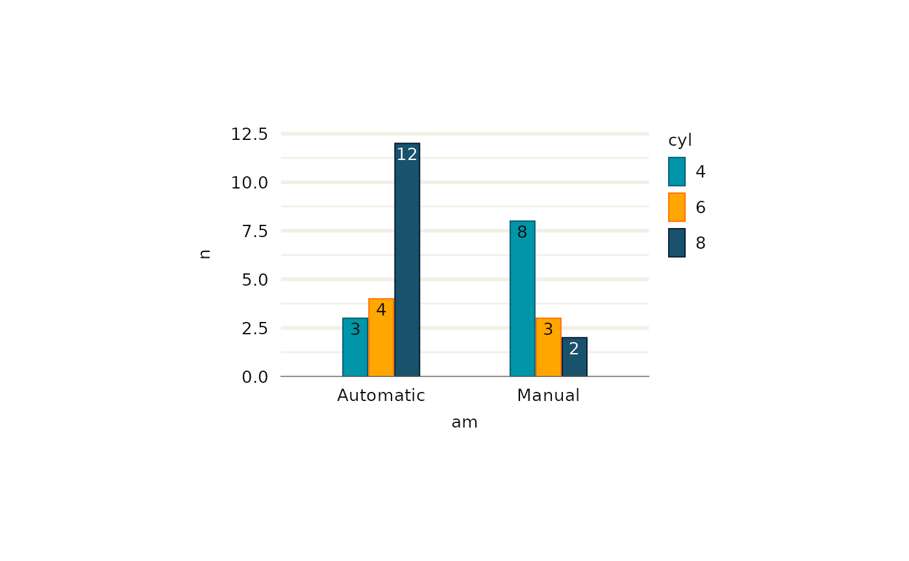
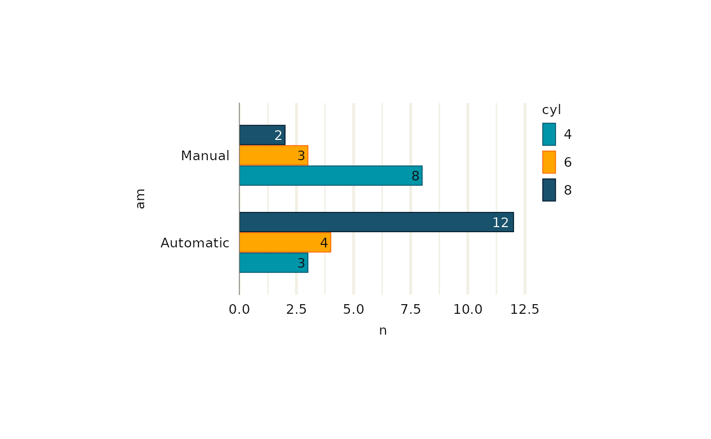

Modifies a mapped colour (or fill) aesthetic for contrast against the fill (or colour) aesthetic.
Function can be spliced into ggplot2::aes with rlang::!!!.
Value
A ggplot2 aesthetic in ggplot2::aes.
Examples
library(ggplot2)
#>
#> Attaching package: ‘ggplot2’
#> The following objects are masked from ‘package:ggscribe’:
#>
#> guide_axis, sec_axis
library(dplyr)
#>
#> Attaching package: ‘dplyr’
#> The following objects are masked from ‘package:stats’:
#>
#> filter, lag
#> The following objects are masked from ‘package:base’:
#>
#> intersect, setdiff, setequal, union
library(stringr)
set_theme(
ggrefine::theme_light(
panel_heights = rep(unit(50, "mm"), 100),
panel_widths = rep(unit(75, "mm"), 100),
)
)
ggwidth::set_equiwidth(equiwidth = 1.75)
mtcars |>
count(cyl, am) |>
mutate(
am = if_else(am == 0, "Automatic", "Manual"),
cyl = as.factor(cyl)
) |>
ggplot(aes(x = am, y = n, colour = cyl, fill = cyl, label = n)) +
geom_col(
position = position_dodge2(preserve = "single", padding = 0.05),
width = ggwidth::get_width(n = 2, n_dodge = 3),
) +
scale_fill_discrete(palette = jumble::jumble) +
scale_colour_discrete(palette = blends::multiply(jumble::jumble)) +
geom_text(
mapping = ggscribe::aes_contrast(), # or aes(!!!ggscribe::aes_contrast()),
position = position_dodge2(
width = ggwidth::get_width(n = 2, n_dodge = 3),
padding = 0.05,
preserve = "single"),
vjust = 1.33,
show.legend = FALSE,
) +
scale_y_continuous(expand = expansion(c(0, 0.05))) +
ggrefine::refine_modern(x_type = "discrete")

mtcars |>
count(cyl, am) |>
mutate(
am = if_else(am == 0, "automatic", "manual"),
am = stringr::str_to_sentence(am),
cyl = as.factor(cyl)
) |>
ggplot(aes(y = am, x = n, colour = cyl, fill = cyl, label = n)) +
geom_col(
position = position_dodge2(preserve = "single", padding = 0.05),
width = ggwidth::get_width(n = 2, n_dodge = 3, orientation = "y"),
) +
scale_fill_discrete(palette = jumble::jumble) +
scale_colour_discrete(palette = blends::multiply(jumble::jumble)) +
geom_text(
mapping = ggscribe::aes_contrast(), # or aes(!!!ggscribe::aes_contrast()),
position = position_dodge2(
width = ggwidth::get_width(n = 2, n_dodge = 3, orientation = "y"),
preserve = "single",
padding = 0.05,
),
hjust = 1.25,
show.legend = FALSE,
) +
scale_x_continuous(expand = expansion(c(0, 0.05))) +
ggrefine::refine_modern(y_type = "discrete")
